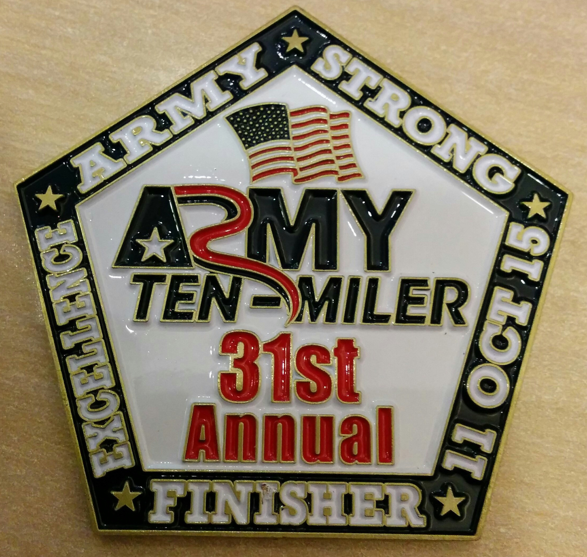
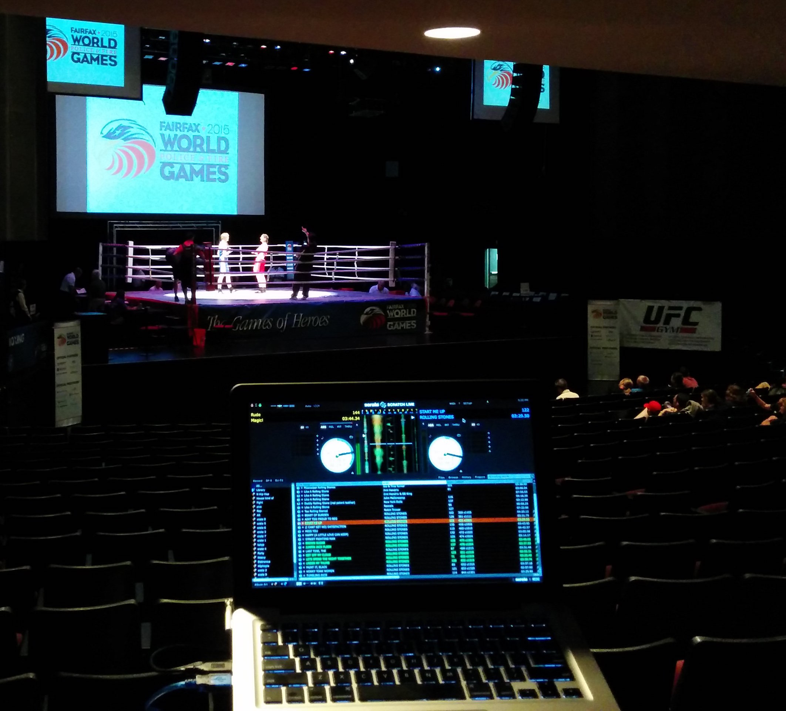
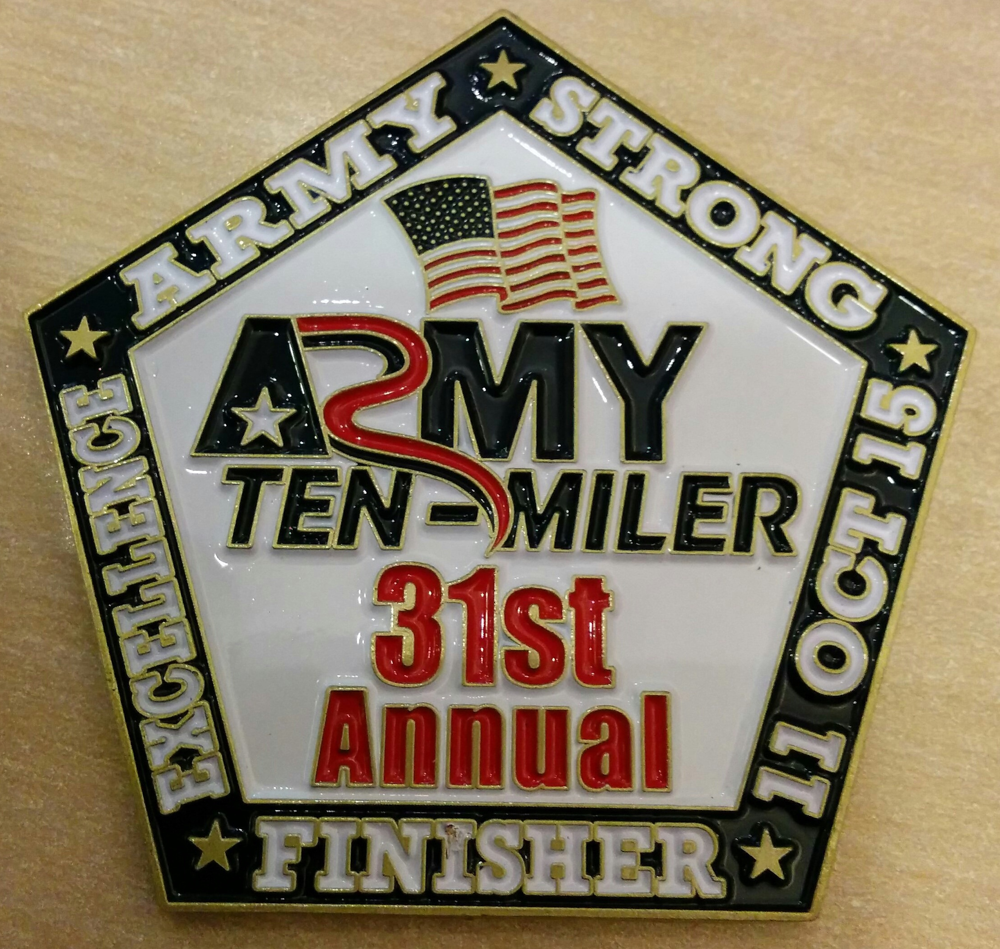
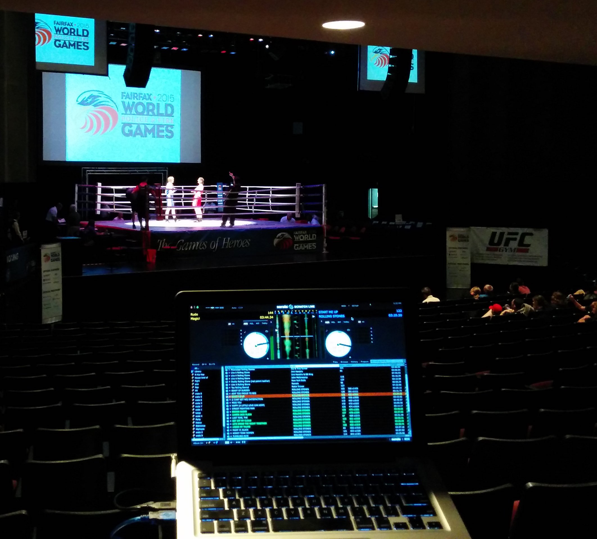

Extra-Curricular Activities
Toastmasters International
Vice President of Education, 2015-2016

Army Ten-Miler
Finisher 2015
International Police and Fire Games
DJ for the Boxing Championship Matches
Art
One piece of my artwork

I am a Senior at Marymount University interested in developing software that aids individuals in solving real world problems. Washington DC is home to some of the most influential people in the country and in the world who need access to up to date and pertinent information. My objective is to work in news organizations, NGOs and government organizations to improve and streamline the collection and dissemination of information through software applications.
I am actively looking for an internship in mobile app and software development.
I will be finalizing my Capstone Project shortly.
The file links below are samples of some IT Coursework
These documents are examples of the following soft skills.
Vice President of Education, 2015-2016
Finisher 2015
DJ for the Boxing Championship Matches
One piece of my artwork
The beautiful thing about life is that nothing is set in stone. This is a tentative path. Many things can change and I could find myself as an entrepreneur if the right circumstances presents itself.